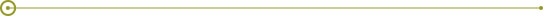

ABOUT THIS REPORT
G4-13, G4-20, G4-21, G4-22, G4-23, G4-28, G4-32, G4-33
This year we are presenting our second sustainability report and the first one we have compiled under the Global Reporting Initiative’s G4 guidelines. This year’s sustainability report has not been externally verified.
The sustainability information includes the results of the activities of our operations in Mexico regarding social and environmental issues based on the material aspects identified as part of our materiality in 2015, and the financial information includes the results of our operations in Mexico, Central America and Brazil.
This information corresponds to the period between January 1 and December 31, 2015, and we present the report on a yearly basis. Any information or data that might differ from that which appeared in the previous report reflects the fact that on this occasion we are using the G4 version of GRI as opposed to the 3.1 version that we used the previous year for the presentation of our data.
We also provide an online report for the convenience of our readers and a social responsibility site where you can find more information about the company, and both our financial and sustainability results.